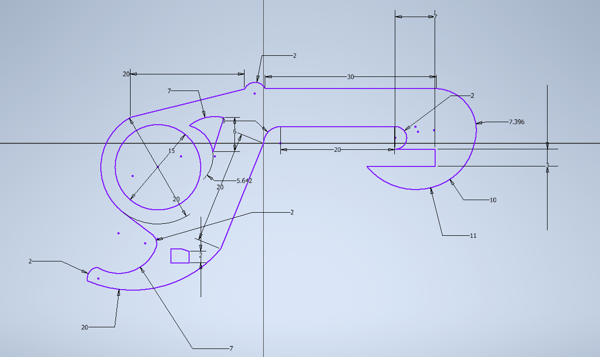
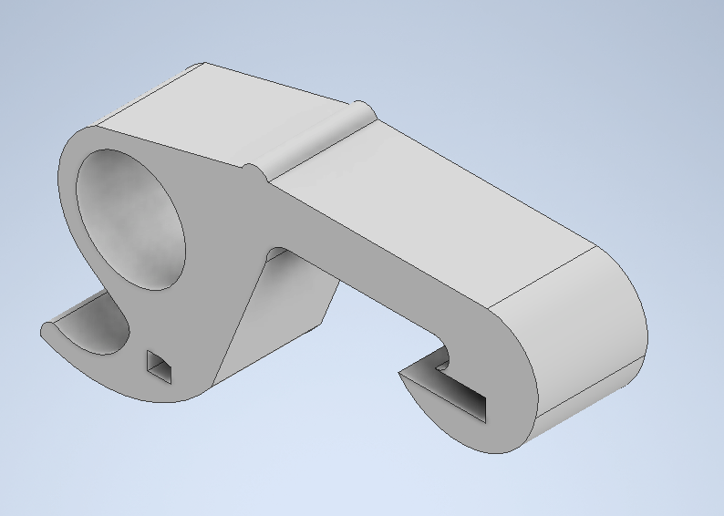
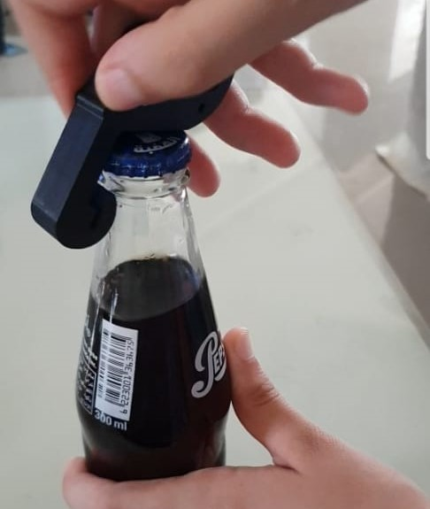

Brain storming
I always had a problem with my nails as they are hard when it comes to deal with opening something like cans. This product is as simple as it sounds, The design was too simple to apply and effecient to use.
Step 1:
Dimensions were chosen randomly at first and then modified to fit a human finger and be sharp enough to open the can or the bottle. The initial dimensions are shown in the following picture.
Step 2:
The design was extruded by 1.5 cm to avoid harming our fingers and to provide enough strength to the part. This part must be able to remove a glass bottle cap without breaking. the extruded design is shown as following
Step 3:
Then I generated an stl file to be able to print the design as a 3d part. The printing stage starts with creating a layer that is removed after finishing. This layer is used to fix the printed part to the glass and act a sacrifiction layer that can be riped off and protect the part itself
The printing process took about 44 minutes to finish
Step 4:
It's now the time to test the part, I used to objects as a test objects. The first one was a pepsi can and the test is shown in the following video. The test was successful because the part was able to open it without difficulities.
The part was strong enough and did not break so we will use the initial dimensions for now on.
Step 5:
The second test object was a glass bottle cap. It was a little bit darder than opening the can. The documented test is on the following photo.
That's it I hope this was useful for you ^^♥️